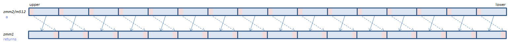

VPROLD - Packed ROtate Left Dword
VPROLD xmm1{k1}{z}, xmm2/m128/m32bcst, imm8 (V5+VL
__m128i _mm_rol_epi32(__m128i a, int imm8)
__m128i _mm_mask_rol_epi32(__m128i s, __mmask8 k, __m128i a, int imm8)
__m128i _mm_maskz_rol_epi32(__mmask8 k, __m128i a, int imm8)
For each DWORD, rotate the bits to the left by the number of bits specified by imm8.
VPROLD ymm1{k1}{z}, ymm2/m256/m32bcst, imm8 (V5+VL
__m256i _mm256_rol_epi32(__m256i a, int imm8)
__m256i _mm256_mask_rol_epi32(__m256i s, __mmask8 k, __m256i a, int imm8)
__m256i _mm256_maskz_rol_epi32(__mmask8 k, __m256i a, int imm8)
For each DWORD, rotate the bits to the left by the number of bits specified by imm8.
VPROLD zmm1{k1}{z}, zmm2/m512/m32bcst, imm8 (V5
__m512i _mm512_rol_epi32(__m512i a, int imm8)
__m512i _mm512_mask_rol_epi32(__m512i s, __mmask16 k, __m512i a, int imm8)
__m512i _mm512_maskz_rol_epi32(__mmask16 k, __m512i a, int imm8)

For each DWORD, rotate the bits to the left by the number of bits specified by imm8.
x86/x64 SIMD Instruction List
Feedback